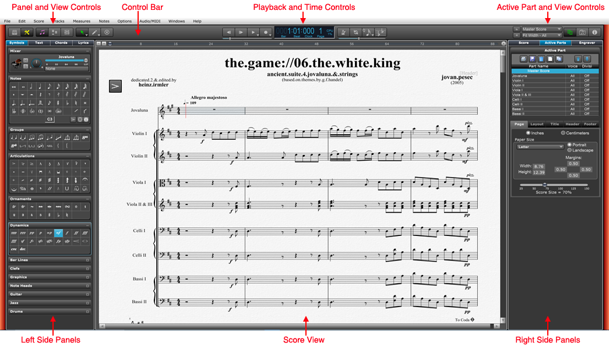

The Main window is where you create and edit your scores. You can access all of the major working areas of Overture in the main window.

At the top of the main window is the Control bar, which includes buttons to access different parts of Overture, buttons for different editing cursors, and transport controls for controlling playback. In the center of the control bar is the Time View, where you can see the current score position. To the right of the Time View are controls for enabling metronome, setting quantizing amount, and enabling Transposed View for the current score.
The center of the main window is the Score View. This is where you enter your notes, text, symbols, etc..
There are two left side panels, one for all the symbols you enter into a score and a library panel for quickly entering and changing track instruments.
The right side panels contain a Score Layout panel for changing the over all appearance of your score, a File Browser panel for quickly opening new scores, and a Track Inspector panel for changing a track's playback and appearance.
You can open the following panels and views by clicking the appropriate buttons in the control bar:

For more information on the Control bar see the Control Bar section.
For more information on the Score View see the Score View section.